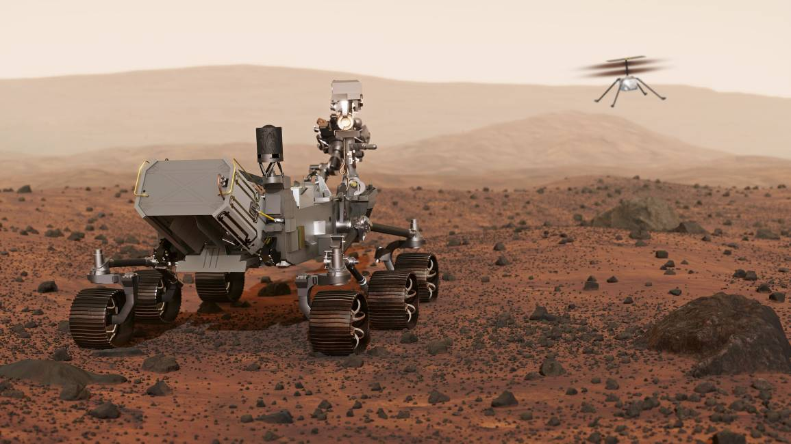
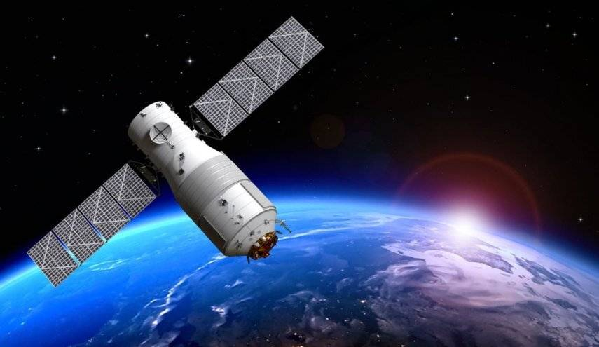

«بیش از پنجاه سال است که بشریت چشمان کنجکاو خود را
به سمت همسایه سرخرنگ زمین دوخته است؛
سیارهای که در نگاه نخست، بیابانی سرد، غبارآلود
و بیروح به نظر میرسد. اما در اعماق این سکوت سنگی،
مریخنوردهایی که ما ساختهایم، همچون زمینشناسانی خستگیناپذیر،
در حال رمزگشایی از داستانهای ناگفته این سیاره هستند.
این کاوشگرها صرفاً مجموعهای از قطعات الکترونیکی و چرخهای فلزی نیستند؛
آنها نمایندگان حافظه تاریخی منظومه شمسیاند که با هر لایه خاکبرداری از سطح مریخ،
در پی یافتن پاسخی برای یکی از بزرگترین پرسشهای بشر هستند:
آیا حیات، تنها به سیاره آبی ما محدود بوده است؟
ورود به دنیای این ماشینهای هوشمند،
سفر به مرزهای دانش و ایستادن در لبهی ناشناختههاست.»
وقتی یک کاوشگر از زمین جدا میشود، تنها یک ماشین نیست که حرکت میکند، بلکه تمام کنجکاوی و آرزوهای بشریت است که به سمت مریخ پرواز میکند. این رباتهای هوشمند، پیشقراولانی هستند که در سکوت و تنهاییِ بیابانهای مریخ، از لبهی پرتگاهها و درههای عظیم عبور میکنند تا برای ما از رازهای پنهان در زیر خاک سرخ بگویند. ما در دورانی زندگی میکنیم که مریخ دیگر یک نقطه در آسمان نیست، بلکه مقصدی برای آیندهی نسلهای بعدی ماستوقتی یک کاوشگر از زمین جدا میشود، تنها یک ماشین نیست که حرکت میکند، بلکه تمام کنجکاوی و آرزوهای بشریت است که به سمت مریخ پرواز میکند. این رباتهای هوشمند، پیشقراولانی هستند که در سکوت و تنهاییِ بیابانهای مریخ، از لبهی پرتگاهها و درههای عظیم عبور میکنند تا برای ما از رازهای پنهان در زیر خاک سرخ بگویند. ما در دورانی زندگی میکنیم که مریخ دیگر یک نقطه در آسمان نیست، بلکه مقصدی برای آیندهی نسلهای بعدی ماست.

کاوشگرهای فضایی از مهمترین دستاوردهای بشر در عصر فناوری و اکتشاف هستند. این فضاپیماهای هوشمند با هدف بررسی سیارهها، قمرها، سیارکها و دیگر اجرام آسمانی به فضا فرستاده میشوند تا اطلاعاتی دقیق و ارزشمند دربارهی ساختار، ترکیبات، دما، جو و تاریخچهی آنها جمعآوری کنند. برخلاف انسان، کاوشگرها میتوانند به نقاطی سفر کنند که برای ما خطرناک، بسیار دور یا غیرقابل دسترس هستند. یکی از بزرگترین اهداف ارسال کاوشگرها، شناخت بهتر مریخ و بررسی امکان وجود حیات در گذشته یا حال این سیاره است. همچنین بسیاری از کاوشگرها برای مطالعهی مشتری، زحل، زهره و حتی دورترین نقاط منظومه شمسی به کار رفتهاند. این ابزارهای پیشرفته با داشتن دوربینهای دقیق، حسگرهای علمی و ابزارهای تحلیل داده، مانند چشم و گوش انسان در فضا عمل میکنند. کاوشگرهای فضایی تنها برای کشف سیارهها ساخته نشدهاند، بلکه به دانشمندان کمک میکنند تا دربارهی شکلگیری منظومه شمسی، تغییرات اقلیمی سیارهها و شرایط لازم برای زندگی بیشتر بدانند. هر ماموریت موفق، گامی بزرگ در مسیر درک بهتر جهان و جایگاه انسان در آن است. به همین دلیل، کاوشگرهای فضایی را میتوان سفیران کنجکاوی انسان در پهنهی بیپایان کیهان دانست.